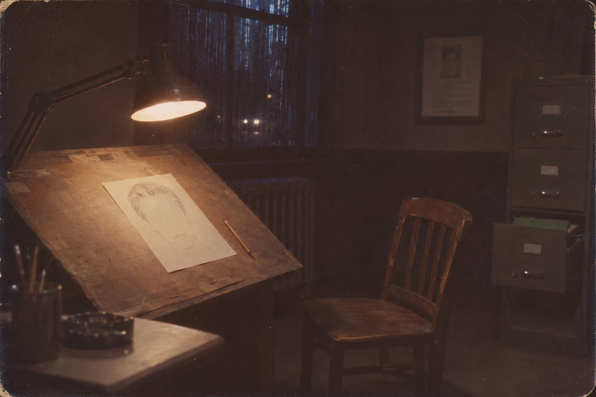

Без особых примет

В воскресенье, двенадцатого октября шестьдесят девятого года, Гаса Ферранте подняли с постели в половине восьмого, и он ещё в машине знал, что день пропал. Марта сказала ему вслед, что он опять забыл бумажник, и он вернулся, и потом всю дорогу до Брайант-стрит думал о бумажнике, а не о том, зачем его вызвали, потому что о бумажнике думать было проще.
Дворец правосудия на Брайант-стрит, восемьсот пятьдесят, построили за одиннадцать лет до того, и в нём до сих пор пахло новым линолеумом, хотя линолеум давно стал серым. Гас работал на четвёртом этаже, в комнате, которую в отделе называли «мастерской», хотя мастерской там был только стол с наклонной доской, лампа на шарнире и шкаф с делами, куда никто, кроме него, не заглядывал. Последние два года полиция понемногу переходила на «Айдентикит» — коробку с прозрачными пластинками, на которых были отпечатаны лбы, носы, подбородки, двести вариантов бровей; свидетель перебирал пластинки, накладывал одну на другую, и получалось лицо, которое ни у кого не было. Гас «Айдентикит» не любил. Он считал, что лицо человек помнит не по частям, а целиком, как запах, и что задача художника — не собрать, а вытащить.
Внизу, в комнате для допросов, его ждали трое подростков — брат и две сестры, старшей лет шестнадцать, у младшей ещё скобки на зубах. Накануне вечером, без пяти десять, они смотрели из окна второго этажа дома на углу Вашингтон и Черри, в Пресидио-Хайтс, и видели, как в стоящем у тротуара жёлтом такси человек на переднем сиденье что-то делает с водителем. Потом человек вышел, обошёл машину, протёр дверцу тряпкой и ушёл в сторону Пресидио, не торопясь. Водителя звали Пол Стайн, ему было двадцать девять лет, он учился в университете штата и по вечерам возил пассажиров, чтобы платить за учёбу. Об этом Гас прочёл в сводке, пока поднимался в лифте, и больше об этом не думал, потому что если художник думает о том, что случилось с водителем, у него дрожит рука.
Он сел напротив детей, положил на колено папку с листами и спросил, кто видел лучше всех.
Мальчик сказал, что лучше всех видел он. По его словам, пассажир был молодой, лет двадцати пяти, может быть тридцати, плотный, в тёмной куртке, стриженный рыжеватым ёжиком, в очках с тяжёлой оправой. Старшая сестра сказала, что пассажир не был рыжим, он был светлый, просто под фонарём казался рыжим. Младшая сказала, что очки — да, очки были точно, и что он был похож на учителя.
— На какого учителя? — спросил Гас.
— На любого, — сказала она. — На такого, который ставит двойки и не злится.
Гас рисовал. Он рисовал так, как его учили в армии, в Форт-Беннинге, где один старый сержант говорил: не спрашивай их, какой был нос, спрашивай, на кого он был похож, — нос они не помнят, а дядю помнят. Он делал три наброска, потом четыре, и каждый раз, когда показывал лист, один из детей говорил «да», а двое других говорили «нет, не совсем». Это было обычно. Необычно было другое, и Гас заметил это не сразу, а только к одиннадцати, когда принёс им из автомата три бутылки «Доктора Пеппера» и, пока они пили, разложил наброски на столе.
Каждый из детей описывал не того человека, которого описывали двое других. Не в мелочах — в мелочах свидетели всегда расходятся, — а в самом главном, в том, что Гас называл «температурой лица». У мальчика выходил парень, с которым можно поспорить на улице. У старшей — мужчина, который однажды подвёз её из школы и всю дорогу молчал. У младшей — учитель. Три человека стояли в одном свете под одним фонарём, и каждый из троих увидел своего.
Он свёл их в один рисунок, потому что так требовалось, и рисунок вышел хороший, профессиональный, такой, какой можно повесить на стену в любом участке Калифорнии: белый мужчина двадцати пяти — тридцати лет, рост пять футов восемь дюймов, плотного сложения, рыжевато-каштановые волосы ёжиком, очки в тяжёлой оправе. Тринадцатого октября лист размножили и разослали. В тот же день в «Кроникл» пришло письмо, в котором автор называл себя убийцей таксиста «на Вашингтон-стрит и Мейпл-стрит» и в доказательство вкладывал в конверт кусок рубашки Пола Стайна, окровавленный и отрезанный ровно, как отрезают ткань в магазине.
Гас прочёл копию письма в отделе, стоя, через плечо инспектора, и единственное, что его зацепило, было слово «Мейпл». Такси стояло на Черри. На Мейпл не было ничего.
⁂
Через три дня, шестнадцатого, ему передали служебную справку, которую ему знать было не положено, но в «мастерскую» её принёс сержант, с которым Гас иногда обедал. В тот вечер из-за ошибки диспетчера в эфир сначала ушла ориентировка на чернокожего мужчину. Двое патрульных из участка Ричмонд, ехавшие на вызов, свернули с Черри на Джексон и на углу Джексон и Мейпл увидели белого мужчину, который шёл по тротуару в сторону Пресидио. Белый мужчина в приличном районе в десятом часу вечера — они не остановились. Ориентировку поправили через минуту.
— Значит, они его видели, — сказал Гас.
— Значит, они видели какого-то белого, — сказал сержант. — Белых в Пресидио-Хайтс много.
Гас ничего не ответил. Он думал о том, что в письме написано «Мейпл», а не «Черри», и что человек, писавший письмо, назвал не то место, где убил, а то место, где на него посмотрела полиция. Как будто убийство на Черри было для него чем-то вроде подготовки, а настоящее событие того вечера произошло через три минуты, на углу Джексон и Мейпл, когда на него упали фары патрульной машины.
Восемнадцатого октября дети пришли снова, втроём, с матерью. Старшая сказала, что они поговорили между собой и что человек был старше. Не двадцать пять, а сорок, может быть сорок пять. Лицо шире. Лоб с залысинами. Гас перерисовал. Он делал это осторожно, не отходя от первого листа, только сдвигая черты, как сдвигают мебель в комнате, где кто-то умер. Новый портрет ушёл во все газеты залива и висел потом, сколько Гас себя помнил, — на почте, в аптеках, на дверях заправок, в рамке в коридоре Дворца правосудия: «Разыскивается за убийство. Белый мужчина, 35–45 лет». Тот, кто однажды видел этот плакат, мог бы нарисовать его по памяти. Этим он был хорош.
Гас не сказал никому, что именно его встревожило. Дети никогда не встречались с патрульными, но через неделю их описание сошлось с описанием, которое патрульные дадут только через месяц. Как будто лицо, пока Гас его рисовал, само выбирало, каким ему быть, — и выбрало старше, тяжелее, спокойнее, такое, которое удобно носить долго.
⁂
У Гаса была привычка, о которой знала только Марта: он никогда не выбрасывал наброски, которые не пошли в дело. Это тоже было из армии. Он складывал их в нижний ящик шкафа, в зелёную папку, и на каждом ставил в углу дату и одну букву — свидетель, город. Над этой привычкой он сам посмеивался. Он говорил, что художник, который выбрасывает неудачные лица, похож на человека, который выбрасывает письма, не читая.
В октябре в его папке лежали три листа Пресидио-Хайтс — по одному на каждого из детей, — и это было бы всё, если бы в конце месяца отдел не попросил его собрать для совещания с шерифами других округов «всё, что есть». Тогда он поехал в Вальехо и в Напу, и ему дали посмотреть описания. Это заняло неделю, и всю эту неделю он плохо спал и ел аспирин горстями, потому что у него с юности от долгой работы глазами болела голова.
В Вальехо молодой человек, раненный в ночь на пятое июля на стоянке у Блу-Рок-Спрингс, описывал стрелявшего как молодого, лет двадцати шести — тридцати, крупного, с вьющимися светло-каштановыми волосами. На озере Берриесса, двадцать седьмого сентября, днём, тот был в капюшоне, и лица не видел никто. Но в тот же день, раньше, три молодые женщины видели у озера мужчину, который наблюдал за ними и потом уехал, и одна сказала, что волосы у него были тёмные и зачёсаны назад, а другая — что он был совсем не крупный. Были ещё люди, которые что-то заметили на дороге у озера Херман в декабре прошлого года: машину, силуэт, ничего, за что можно уцепиться.
Гас нарисовал всех. Каждое описание отдельно, по одному на свидетеля, как привык. И когда в субботу вечером он положил эти листы на свой стол рядом с плакатом, у него возникло чувство, которое он потом не мог описать никому, даже Марте, — будто он смотрит не на рисунки, а на окна одного дома, и в каждом окне стоит другой человек, но дом один.
Человек на озере пришёл днём и надел капюшон. Чёрный, с прорезями для глаз, с белым перечёркнутым кругом на груди, как прицел. Все, кто писал о Берриессе, считали это театром — человеку хотелось, чтобы его запомнили страшным. Гас теперь думал по-другому. Ночью тебя никто не может толком описать. Днём, вблизи, за долгим разговором — а он разговаривал с ними долго, рассказывал им что-то про побег из тюрьмы в Монтане, — днём кто-нибудь посмотрел бы на него как следует, и тогда у него появилось бы лицо. Он надел капюшон не для того, чтобы его запомнили. Он надел его, чтобы его не запомнили никаким.
Гас сложил все листы в зелёную папку. Их было девять.
⁂
После плаката убийства прекратились.
Этого никто не говорил вслух. В ноябре в отделе считали, что он затаился, в декабре — что уехал, в марте — что умер или сидит за что-то другое. Письма приходили. Восьмого ноября в «Кроникл» пришла открытка с капающей ручкой и лист с новым шифром, триста сорок знаков, которые никто не мог прочесть. Девятого — длинное письмо на семи страницах, со схемой бомбы для школьного автобуса, с хвастовством и с припиской, которую Гасу пересказали в тот же день: «P. S. Два копа облажались минуты через три после того, как я вышел из такси». И ещё там было обещание, которое Гас перечитывал потом много раз: что впредь он не станет объявлять о своих убийствах, а будет делать их похожими на обычные ограбления, убийства в ссоре и несчастные случаи.
— Значит, он продолжит, — сказал инспектор, у которого было это дело. — Просто мы перестанем его узнавать.
— Или он не может, — сказал Гас, — и хочет, чтобы мы думали, что может.
Инспектор посмотрел на него так, как смотрят на человека, который неудачно пошутил на похоронах.
Двенадцатого ноября, через три дня после письма, один из двух патрульных подал рапорт о том, кого он видел на Джексон-стрит. Рапорт был подробный: рост около пяти футов десяти дюймов, сто восемьдесят — двести фунтов, сложение плотное, грудь бочкой, волосы светлые, возможно с проседью на затылке, ёжик, очки. Гас прочёл его и долго сидел над ним. Ни этой подробности, ни этой уверенности в тот вечер, когда машина проехала мимо, не было. Они появились после письма. Письмо сказало патрульному, что он видел убийцу, — и патрульный увидел его. Не соврал, Гас был в этом уверен. Просто вспомнил того, кого ему велели вспомнить.
И лицо, которое он вспомнил, было лицом с плаката.
Гас ехал домой по Девятнадцатой авеню, и на каждом светофоре ему казалось, что он понял что-то очень простое и очень плохое. У этого человека не было своего лица. Каждый, кто на него смотрел, видел кого-то своего — парня с улицы, мужчину, который однажды подвёз из школы, учителя. Поэтому описания никогда не сходились, поэтому ориентировка в тот вечер «ошиблась», поэтому днём он прятался под капюшоном. Он был тем, кого в нём видели, а значит, никем, а значит, мог прийти куда угодно и уйти, не оставив ничего, кроме того, что каждый унесёт в себе.
А потом Гас нарисовал ему лицо. Одно на всех. Его напечатали миллионом экземпляров, и миллион человек посмотрел на него и запомнил, и теперь каждый, кто видел незнакомца в очках на тёмной улице, видел этот плакат. В полицию звонили тысячи людей: сосед, шурин, бывший муж, человек в автобусе. Инспектора жаловались, что плакат «сработал слишком хорошо». Гас думал, что они не понимают, насколько хорошо он сработал. Плакат держал его. Человек, у которого есть лицо, не может войти в чужую машину и выйти из неё незамеченным. Он может только писать.
Марта спросила за ужином, почему он не ест. Он сказал, что болит голова. Это была правда.
⁂
Он пришёл семнадцатого декабря, в среду, в начале седьмого вечера.
Гас задержался, потому что доделывал портрет для отдела краж — женщина, которая выдавала себя за медсестру и обирала стариков в Сансете, — и в коридоре четвёртого этажа уже выключили половину ламп. Стук в дверь был негромкий, вежливый, двумя костяшками. Гас сказал «открыто», не поднимая головы.
Вошёл мужчина в тёмно-синей нейлоновой куртке на молнии, какие продают в любом универмаге за девять долларов, и встал у двери, держа шляпу в руках. Гас потом много раз пытался вспомнить, какое у него было лицо, и не мог. Он помнил куртку, помнил шляпу — серую, с узкой лентой, — помнил, что от мужчины пахло растворителем для краски или жидкостью для зажигалок, чем-то химическим и чистым. Лицо он помнил так, как помнят лицо человека, который сидел напротив в автобусе: было, нормальное, никакое.
— Мне сказали внизу, что вы рисуете, — сказал мужчина. — Портреты. Для розыска.
— Рисую, — сказал Гас. — Вы по какому делу?
— По тому самому. — Мужчина кивнул в сторону коридора, где в рамке висел плакат. — Я его видел.
Гас отложил карандаш. В отдел каждый день звонили люди, которые «его видели», и человек десять в месяц приходили сами. Их полагалось направлять к дежурному инспектору на третий этаж. Гас знал это и не сделал этого. Он потом говорил себе, что не сделал этого от усталости, но это было не так. Он не сделал этого, потому что мужчина сказал «я его видел» тем голосом, каким говорят «я его знаю».
— Садитесь, — сказал он.
Мужчина сел на стул для свидетелей, положил шляпу на колено, ладонью вниз, как кладут шляпу в церкви.
— Плакат неверный, — сказал он. — Вы не обижайтесь. Я понимаю, как это делается. Дети, темно, фонарь. Но он не такой. Я видел его ближе.
— Где?
— Близко, — сказал мужчина и улыбнулся, как улыбаются, когда собеседник задал вопрос не по делу. — Нарисуйте, как я скажу. Вы же для этого здесь.
Гас взял чистый лист. Он сделал это, как делал сотни раз, — сначала овал, лёгкий, почти без нажима, линия глаз, линия рта. Он спросил, каким было лицо — широким, узким. Мужчина подумал.
— Уже, чем у вас. Он не толстый. У вас он толстый, потому что куртка. И не сорок, нет. Вы ему прибавили. Он моложе.
Гас сузил овал. Он рисовал и слушал, и с каждой поправкой что-то в комнате менялось, так незаметно, что он понял это не сразу. Мужчина на стуле сидел свободнее. Сначала он держал спину прямо, как человек, который пришёл к врачу, а теперь откинулся, положил руку на спинку соседнего стула. Голос стал теплее, в нём появилось что-то домашнее.
— Волосы, — сказал он. — Не ёжик. Это он тогда так, на один вечер. Обычно длиннее. Зачёсаны.
Гас провёл линию надо лбом.
— Очки, — сказал мужчина. — Очков не надо.
Гас поднял голову. Он посмотрел на мужчину, и ему показалось — он потом так и не решил, показалось ли, — что лицо напротив стало чуть определённее, чем было минуту назад. Не другим. Определённее. Как фотография в кювете, когда изображение уже проступило, но ещё можно выдернуть лист и смыть.
— Без очков, — повторил мужчина. — И глаза не такие. Дайте я покажу.
Он протянул руку за карандашом.
Гас не отдал. Он сидел с карандашом в руке над листом, на котором было уже почти лицо — узкое, моложе сорока, с зачёсанными назад волосами, без очков, без глаз, — и чувствовал то, что чувствуют, когда стоят на краю платформы и поезд идёт мимо, и тянет, и ты знаешь, что это всего лишь воздух. Ему оставалось провести, может быть, двадцать линий. Глаза, складку у носа, тень под нижней губой. Двадцать линий, и у этого лица было бы лицо. А тот, на плакате в коридоре, — плотный, в очках, с залысинами, — стал бы просто ошибкой детей, которые смотрели из окна под фонарём.
— Вы мне не скажете, кто вы? — спросил Гас.
— Свидетель, — сказал мужчина.
— Мне нужно имя для протокола.
— Вы его узнаете, — сказал мужчина, и Гас увидел, что он больше не улыбается. — Взбодритесь. Когда закончите, вы всё узнаете.
Гас положил карандаш. Он положил его не на стол, а в нагрудный карман рубашки, и застегнул клапан, и только потом понял, что сделал.
— Я не закончу, — сказал он. — Этого человека разыскивают по плакату. По этому плакату. Если у вас есть сведения, третий этаж, дежурный инспектор. Я могу вас проводить.
Мужчина смотрел на него долго. Не зло. Скорее так, как смотрит человек, который давно привык просить и получать отказ и всё-таки каждый раз надеется. Гасу стало его жалко — на одну секунду, острую и стыдную, — и эту секунду он потом помнил дольше, чем всё остальное.
— Мне очень трудно, — сказал мужчина тихо. — Вы не представляете, как мне трудно держаться. Я ведь не прошу ничего особенного. Просто нарисуйте правильно.
На столе зазвонил телефон. Гас поднял трубку, потому что двенадцать лет поднимал трубку, когда звонил телефон. Это была Марта: она спрашивала, приедет ли он к ужину, потому что приехала её сестра из Сакраменто, и она запекла окорок, и если он опять задержится, то пусть позвонит, а не заставляет всех ждать. Он сказал, что выезжает. Он говорил с ней, может быть, минуту и стоял при этом вполоборота к столу, лицом к окну, за которым внизу, на Брайант-стрит, горели фары.
Когда он положил трубку, стул для свидетелей был пуст. Дверь была прикрыта, но не до конца. Недорисованный лист лежал там, где Гас его оставил. Шляпы не было.
Он вышел в коридор. Половина ламп не горела, плакат в рамке висел на месте, лифт стоял на первом этаже. Дежурный внизу сказал, что никто не выходил, потом сказал, что выходил кто-то в синей куртке, потом сказал, что вечером, мистер Ферранте, через вестибюль проходит сто человек и он не обязан смотреть на каждого.
Гас вернулся наверх, сел и долго смотрел на недорисованное лицо без глаз. Потом взял его, поставил в углу дату — «17.XII.69» — и букву «С», «свидетель», и положил в зелёную папку в нижнем ящике. Он хотел его сжечь и не сжёг. Он говорил себе потом, что не сжёг из профессиональной привычки. Но это было не так. Он не сжёг его, потому что боялся, что пламя тоже его нарисует.
Через три дня, двадцатого декабря, ровно через год после убийства двоих школьников на дороге у озера Херман, адвокат Мелвин Белли получил по почте рождественскую открытку и письмо. В конверте был ещё один лоскут рубашки Пола Стайна. Письмо было не похоже на прежние: в нём не было хвастовства. Автор писал, что ему очень трудно держаться, что он боится снова потерять контроль, и просил о помощи.
Гас прочёл это в газете через неделю, в кафе напротив Дворца правосудия, и уронил ложку в кофе. Официантка принесла ему новую чашку бесплатно. Он запомнил это, потому что больше в тот день не запомнил ничего.
⁂
Он никому не рассказал. Рассказать было нечего: человек без имени, без примет, недорисованный лист, звонок жены. Он знал, что если пойдёт на третий этаж, его выслушают, вежливо, а через неделю в отделе начнут говорить, что Ферранте переработал. Он знал это, потому что сам так говорил про других.
Вместо этого он стал сторожем.
Двадцатого апреля семидесятого пришло письмо, в котором автор писал «Меня зовут» и дальше — тринадцать знаков шифра. Шифр никто не прочёл. Гас не удивился. Имя — это то же лицо: его дают другие. Человек, у которого нет ни того ни другого, может только показать пустые клетки и ждать, что кто-нибудь их заполнит. В июне пришла карта горы Диабло с перечёркнутым кругом и ещё тридцать два знака, будто бы указывающие место, где зарыта бомба. Бомбы не нашли. В конце октября репортёру «Кроникл» Полу Эйвери пришла открытка на Хэллоуин — скелеты, тыква, «Ку-ку, ты обречён». Письма приходили и приходили, всё более болтливые, всё более злые, и ни одно из них не было подтверждено убийством.
Гас следил за плакатом. Это было единственное, что он мог делать. Когда в отделе предложили выпустить к годовщине обновлённый портрет — «освежить», сказал кто-то, — он сказал, что старый вернее, и настоял, и его послушали, потому что он был старше всех в своём деле. Когда в семьдесят первом газетный художник из Денвера, поговорив со свидетелями, перерисовал лицо старше и печальнее и газеты по всей стране перепечатали это лицо рядом с полицейским, Гас неделю не спал. Он ходил по городу и смотрел на прохожих. Он ждал, что прочтёт в газете про ограбление, которое не похоже на ограбление, или про несчастный случай, который не похож на несчастный случай. Ничего не случилось. Денверское лицо не прижилось: плакат висел везде, к нему привыкли, как привыкают к погоде. Гас понял, что клетку можно расшатать, но не так легко, — что держит не рисунок, а миллион людей, которые на него смотрят.
Он стал плохо спать. В шестьдесят девятом году ему было сорок восемь лет, к семьдесят третьему он стал носить очки для чтения, а Марта говорила, что он поседел за одну зиму, хотя на самом деле за четыре. Он перестал рисовать для краж и мошенничества. Он рисовал только тогда, когда без него нельзя было обойтись, и после каждого рисунка подолгу сидел над ним и проверял — нет ли в этом лице чего-то лишнего, не проступает ли под чужими чертами то, узкое, моложе сорока, без глаз. Иногда ему казалось, что проступает. Он рвал лист и начинал заново. В отделе говорили, что Ферранте стал медленным.
Зелёную папку он не открывал. Он знал, что в ней лежат тридцать семь листов, потому что однажды, в начале семьдесят первого, пересчитал их, по одному, сверяя даты и буквы, и с тех пор не прикасался. Девять из Пресидио, Вальехо, Напы и с озера Херман. Остальные — свидетели, которые после плаката приходили и звонили и описывали того, кого видели, и которых Гас рисовал по просьбе инспекторов, чтобы потом положить лист в ящик, потому что ни одно из этих лиц не совпадало с плакатом. Двадцать семь человек увидели убийцу на улице, в автобусе, за рулём соседней машины, и каждый увидел своего. И одно лицо без глаз. Тридцать семь лиц, которые можно было бы надеть.
⁂
Письмо пришло в «Кроникл» тридцатого января семьдесят четвёртого года.
Оно было короткое. Автор писал, что посмотрел «Экзорциста» и что это лучшая сатирическая комедия, какую он видел. Были какие-то стихи, какой-то символ, которого никто не понял. А внизу, в конце, как счёт в спортивной таблице: «Я — 37. Полиция Сан-Франциско — 0».
В отделе решили, что он хвастается. Он и раньше набавлял себе убитых: семь, десять, тринадцать, теперь вот тридцать семь. Кто-то сказал, что это хороший знак — раз человек перешёл к стихам, значит, у него кончился запал. Кто-то повесил копию письма на доску объявлений, между расписанием дежурств и рекламой кегельбана.
Гас прочёл его на этой доске, в коридоре, в десятом часу утра. Он стоял перед доской долго, так долго, что мимо него дважды прошёл один и тот же сержант. Потом он пошёл в «мастерскую», закрыл дверь, сел на пол перед шкафом и открыл нижний ящик.
Зелёная папка лежала там, где лежала. Он вынул её и стал считать листы, сверяя даты и буквы, как тогда, в семьдесят первом. Он считал медленно, потому что у него дрожали руки, а когда дошёл до конца, начал сначала.
Их было тридцать шесть.
Он пересчитал трижды. Он перебрал каждый лист, проверил, не слиплись ли два, заглянул под папку, вынул весь ящик и посветил фонариком в пустоту за ним. Все листы Пресидио были на месте. Вальехо, Напа, озеро Херман — все. Двадцать семь свидетелей после плаката — двадцать семь. Не хватало одного: узкого лица моложе сорока, с зачёсанными назад волосами, без очков и без глаз. С датой «17.XII.69» и буквой «С».
Он сидел на полу и пытался вспомнить, когда в последний раз видел этот лист своими глазами. В семьдесят первом он считал по углам, по датам, не разглядывая, но дату «17.XII.69» помнил, потому что на ней задержался палец. Значит, три года назад лист был здесь. Значит, его взяли потом.
Шкаф не запирался. «Мастерская» не запиралась тоже: красть в ней было нечего. Три года любой, кто знал, какой ящик нижний и какая папка зелёная, мог прийти вечером, когда на четвёртом этаже выключают половину ламп, сесть на стул для свидетелей и подождать, пока в коридоре стихнут шаги. Гас подумал о дежурном, который сначала сказал, что никто не выходил, а потом — что выходил кто-то в синей куртке. Он подумал, что тот, кто однажды прошёл через вестибюль незамеченным, мог проходить через него сколько угодно раз, и что всё это время он, Гас, приходил утром, садился за наклонную доску и не знал, кто сидел на соседнем стуле ночью.
И что двадцать линий можно провести и самому. Особенно если знать, какими они должны быть.
Писем больше не было. Тех, в которых бесспорно были бы и его почерк, и его ошибки, и его круг, — больше не было никогда. Через несколько лет в отделе стали говорить, что он умер, и это было удобно всем, и Гас кивал вместе со всеми. Он вышел на пенсию в семьдесят шестом. Зелёную папку забрал домой и держал на чердаке, хотя знал, что держать уже нечего.
Плакат висел ещё долго. Его перепечатывали в книгах, его показывали по телевизору, его потом носили на футболках. Лицо в очках, с залысинами, тридцать пять — сорок пять лет. Миллионы людей знали его наизусть. Гас иногда видел его в витрине книжного магазина и думал, что это самый лучший рисунок, который он сделал в жизни, и что он держит того, кого держит, так же крепко, как в шестьдесят девятом, — то есть никого.
Он умер в восемьдесят девятом, в больнице в Дейли-Сити, от второго инсульта. Последние полгода он почти не говорил. Марта рассказывала потом сестре, что в последнюю неделю он попросил карандаш и бумагу, и она принесла, и он долго держал карандаш над листом, но так ничего и не нарисовал. Только овал, лёгкий, почти без нажима.
Она сказала, что он, наверное, хотел нарисовать её. Он ведь никогда её не рисовал — говорил, что не может, что слишком хорошо её знает, что лица тех, кого любишь, не видишь.
А он лежал и смотрел на этот овал и, может быть, впервые за двадцать лет пытался вспомнить лицо человека в синей куртке. И не мог. Как не смог бы никто из тех, мимо кого этот человек прошёл за двадцать лет: в автобусе, в очереди на почте, у соседней колонки на заправке, в коридоре любой больницы. Они видели его, каждый своего, и шли дальше.